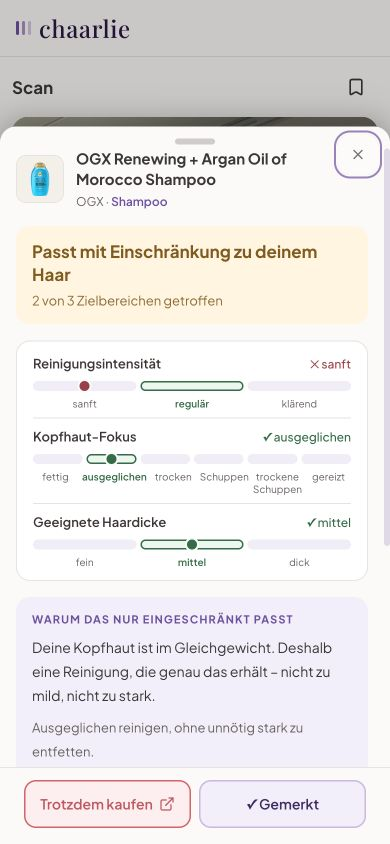

DEIN PROFIL MACHT DEN UNTERSCHIED Ein Scan. Eine Einschätzung für dein Haar.Dein Quiz liefert den Maßstab: dein Haarprofil. Der Scanner vergleicht damit jedes erfasste Produkt. DEIN HAARPROFIL Wellig · mittelstark Kopfhaut: ausgeglichen |
↓ SO SIEHT DER ABGLEICH AUS · BEISPIEL  Beispielprofil. Dein Ergebnis hängt von deinem Haar und dem gescannten Produkt ab. Mein Ergebnis & Scanner ansehen Zu deinem Ergebnis und dem Scanner-Angebot. Fragen? Antworte einfach auf diese E-Mail. |